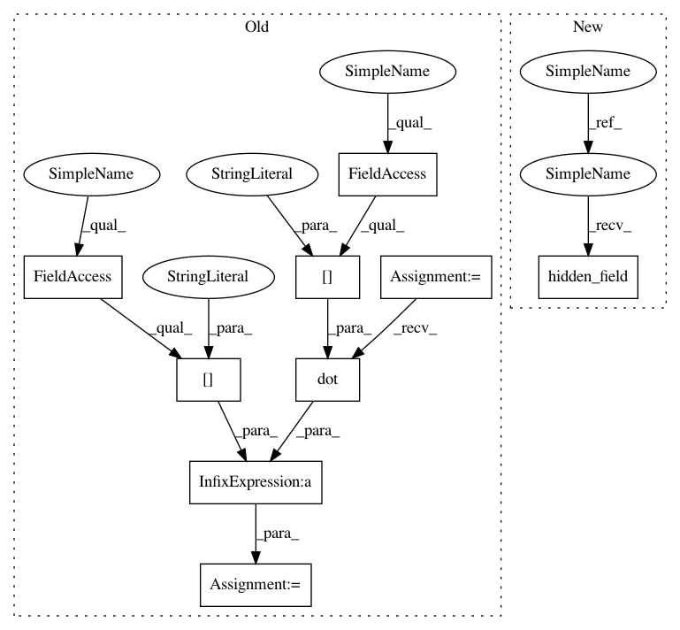

de7eb71909ad2ef9c92b3d08fff5e08c0d6a334f,paysage/models/hidden.py,RestrictedBoltzmannMachine,hidden_mean,#RestrictedBoltzmannMachine#Any#,132
Before Change
return self.layers["hidden"].sample_state(field)
def hidden_mean(self, visible):
field = self.params["hidden_bias"] + numpy.dot(visible, self.params["weights"])
return self.layers["hidden"].mean(field)
def hidden_mode(self, visible):
field = self.params["hidden_bias"] + numpy.dot(visible, self.params["weights"])
After Change
def sample_hidden(self, visible):
return self.layers["hidden"].sample_state(self.hidden_field(visible))
def hidden_mean(self, visible):
return self.layers["hidden"].mean(self.hidden_field(visible))
def hidden_mode(self, visible):
return self.layers["hidden"].prox(self.hidden_field(visible))
In pattern: SUPERPATTERN
Frequency: 3
Non-data size: 9
Instances
Project Name: drckf/paysage
Commit Name: de7eb71909ad2ef9c92b3d08fff5e08c0d6a334f
Time: 2016-12-11
Author: charlesfisher@Charless-MacBook-Pro.local
File Name: paysage/models/hidden.py
Class Name: RestrictedBoltzmannMachine
Method Name: hidden_mean
Project Name: drckf/paysage
Commit Name: de7eb71909ad2ef9c92b3d08fff5e08c0d6a334f
Time: 2016-12-11
Author: charlesfisher@Charless-MacBook-Pro.local
File Name: paysage/models/hidden.py
Class Name: RestrictedBoltzmannMachine
Method Name: hidden_mode
Project Name: drckf/paysage
Commit Name: de7eb71909ad2ef9c92b3d08fff5e08c0d6a334f
Time: 2016-12-11
Author: charlesfisher@Charless-MacBook-Pro.local
File Name: paysage/models/hidden.py
Class Name: RestrictedBoltzmannMachine
Method Name: sample_hidden